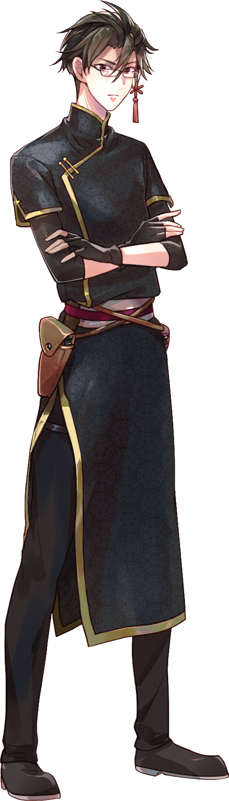
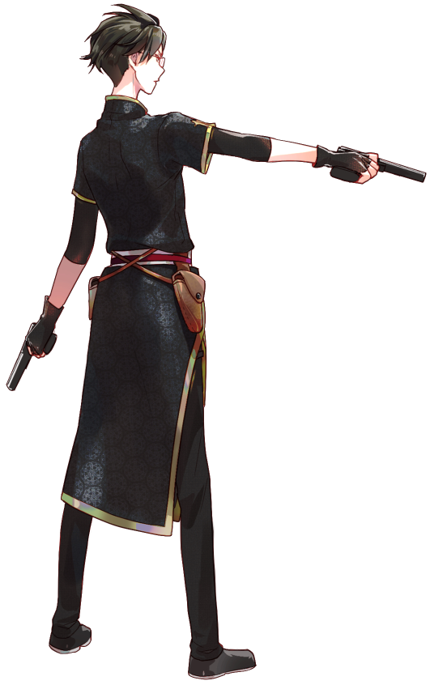

「──信用に足る人間かは、
俺が決める。口出しは不要だ」
| 年齢 | 18歳 |
|---|---|
| 誕生日 | 9月28日 |
| 立場 | 九天党の警察 |
| 身長 | 179cm |
| 出身 | 横浜中華街 |
| 趣味・特技 | 空手 |
| 家族構成 | 母 |
| イメージカラー | 黒鳶（くろとび） |
横浜中華街の治安を維持する組織
「九天党」
に所属しており、
拳銃の所持が認められている。
狐炎をなるべく人目に触れない場所で保護しており、
心配が絶えない。
狐炎に変若水を飲ませた者の血を引いていることを知り、
不老不死にしてしまったことへの責任をなんとなく感じている。
こう見えて純日本人である。